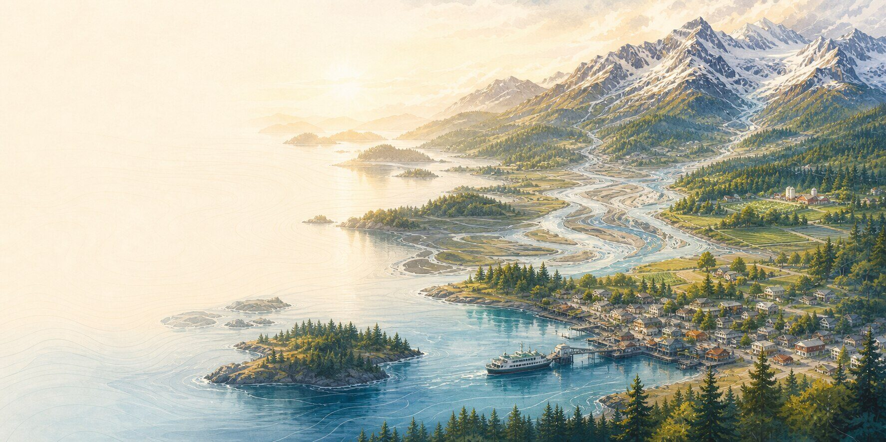

Drop, Cover, and Hold On.
Stay where you are while the ground is moving unless the immediate location is unsafe. Protect your head and neck. After the shaking, check for immediate hazards.
Earthquake details and sources
First Moves
Get yourself to a safer place first. If local officials are giving instructions for your area, follow them. The rest can wait until you have room to think.
Immediate action
These are short starting points. Current local orders, warnings, road closures, and utility instructions take precedence.
Stay where you are while the ground is moving unless the immediate location is unsafe. Protect your head and neck. After the shaking, check for immediate hazards.
Earthquake details and sourcesWhen the shaking stops, move inland or to high ground as soon as you can do so safely. Do not wait for an alert when you have felt the natural warning.
Coastal earthquake guidanceUse the route named in the current notice when one is provided. If conditions are worsening around you, do not wait for a perfect information picture.
Wildfire details and sourcesDo not walk or drive through floodwater. A familiar road can hide a washed-out surface, current, debris, or contamination.
Flood details and sourcesStay clear of downed lines. Use generators outdoors and well away from openings. Follow utility and road instructions for your location.
Winter-storm details and sourcesValley hazards and ashfall call for different actions. Use the issuing authority's map and instructions rather than a regional summary.
Volcano details and sourcesReviewed July 25, 2026. Recheck linked official guidance before publication and on the scheduled review date.
Once you're safe enough to think
Once you are safe enough to think, ordinary functions and the people nearby become the work.
Water, sanitation, temperature, air, medication, information, movement, and animals.
Gather safely, record observable facts, match needs and offers, and pass useful information onward.
Document what happened, keep records together, and protect the choices that will matter later.